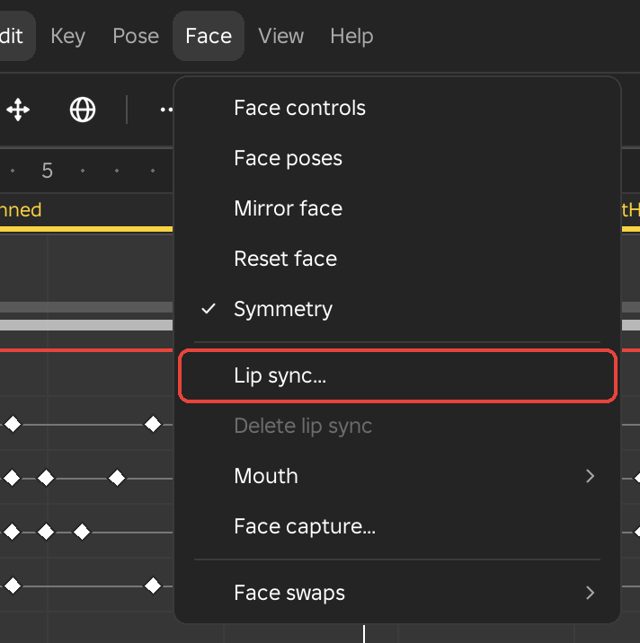
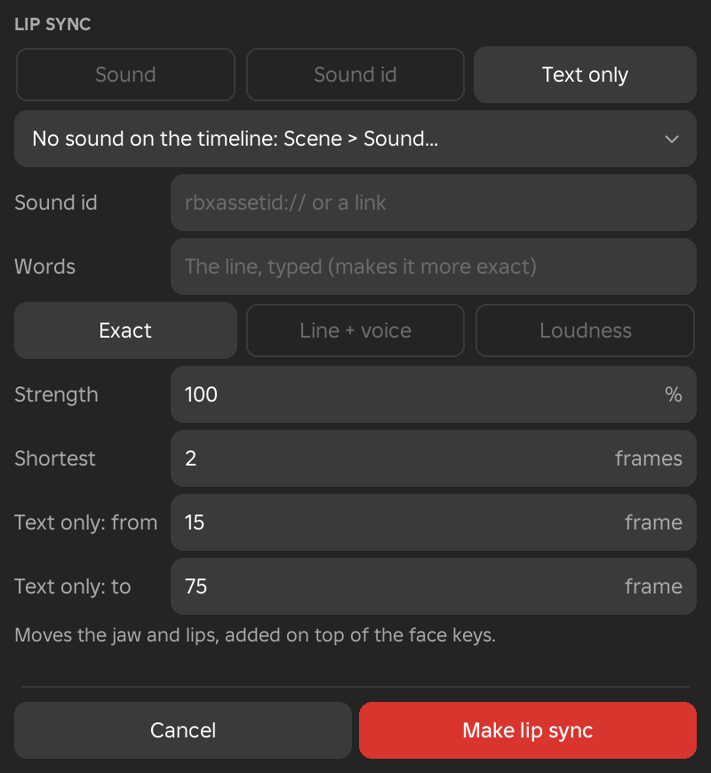

Face Menu
The Face menu holds the tools for a character's face: posing it, timing mouth shapes to a voice, acting it to a webcam and switching between face pictures. It shows in the Animate and Scene workspaces.

Dynamic and Classic Heads
Roblox has two kinds of head, and the Face tools treat them differently. A dynamic head is a mesh head with a FaceControls object inside it. Its face is moved by 50 face controls, such as Jaw Drop or Left Brow Lowerer, each with a value from 0 to 1. Framez keys those values like any other animation, and the clip is saved in Roblox's own face animation format, so the face plays in any game with no script.
A classic head, such as the head of an R6 character, has no face controls. Its face is a Decal, a flat picture on the front of the head, and an animation cannot change a Decal. Framez instead keys which picture the Decal shows from each frame on. Each change is saved as a marker in the clip, and a small script in your game swaps the picture when the clip plays. A tool in this menu that suits only one kind of head is greyed on the other, and the greyed row says why. Lip sync and Face capture work on both.
Face Controls
- Menu
- Face ‣ Face controls
- The Face row under Head in the track list
- Workspace
- Animate, Scene
- Needs
- A dynamic head
Face controls opens the face map in the Inspector for a head that has FaceControls. Clicking the Face row that Framez adds under Head in the track list does the same. The Face row opens into five regions, Brows, Eyes, Jaw, Mouth and Tongue, and each region opens into one row for every control that has keys. To list all 50 controls, including the ones with no keys, right-click a Face row and turn on Show every control.
Face keys behave like the keys of a joint. You can move them along the row, copy and delete them, and give each one its own easing for the move to the next key. Right-click a key to choose Linear, Smooth, Ease out, Ease in, Hold, Overshoot or Bounce. Every timing tool in Framez moves face keys together with the rest of the clip.
The face is saved as Roblox's own face animation, so the game plays it with no script. Clips made in Roblox's Face Animation editor, or recorded with Roblox's Face Capture, open in Framez with their face keys already in place.
See Also
Face Map
- Menu
- Face ‣ Face controls
- Workspace
- Animate, Scene
- Needs
- A dynamic head
The face map is the Inspector page for a dynamic head's face. It is a front view of a face with a dot for each part: the outer and inner brows, the eyes and the point they look at, the cheeks, the nose, the upper and lower lip, the lip corners, the cheek puffs, the tongue, the jaw and the chin. Because it is a front view, the character's left side is on the right of the map.
Drag a dot up, down or sideways to move the face controls it owns. A brow dot moves its brow up and down, a lip corner dot also moves out and in, and the jaw dot opens the jaw and slides it to either side. About 50 pixels of dragging covers the full range of a control. When you let go, Framez keys every control the dot moved at the playhead as one undo step. The dot you last touched is highlighted, and a dot is outlined when any of its controls has a key on the current frame. Point at a dot to see its controls named.
Under the map, the section named after the selected dot shows its controls as sliders. Below it, every control sits in a section for its region, Brow controls, Eye controls, Jaw controls, Mouth controls and Tongue controls, folded until you open them.
Options
- Face poses
- Opens the same list of faces as the Face poses row of the menu.
- Mirror
- Swaps the left and right controls at the playhead, as Mirror face does.
- Reset button
- Keys every keyed control at 0 on this frame, as Reset face does.
- Symmetry
- The same setting as the Symmetry row of the menu. With it on, a dot moves its twin on the other side by the same amount.
- Slider value
- Each slider shows its control's value from 0 to 1. Drag the slider, or type a number in the box, to key the control at the playhead.
- Key button
- The diamond at the right of a slider keys the control at its current value on this frame, or takes the key away when one is there.
Example
For example, to make a character look startled at frame 30, move the playhead to 30, drag the two inner brow dots up and the jaw dot down a little, and let go. The controls are keyed together. Another key at frame 24 with the brows at rest makes the face go from calm to startled over those frames.
Face Poses
- Menu
- Face ‣ Face poses
- The Face poses button on the face map
- Workspace
- Animate, Scene
- Needs
- A dynamic head
Face poses sets a whole expression in one click. It opens a list of faces. Point at one and the head shows it, move away and the head goes back, and click to key the face at the playhead.
The list has three groups. The ready faces are 21 expressions that Framez builds from the face controls, such as Smile, Big smile, Frown, Angry, Sad, Surprised, Scared, Disgust, Shout, Squint, Wink L, Smirk R, Pout, Puff cheeks and Tongue out. My poses are the faces you saved yourself. The last group holds the nine mouth shapes used by lip sync, so you can key one by hand.
Options
- Amount
- How strongly the face is applied, chosen from 25, 50, 75, 100, 125 and 150 percent. A control never goes past 1, even at 150 percent. The default is 100 percent.
- Replace the face
- Sets every control to the pose's values and returns the controls the pose does not use to 0, so the old expression disappears. This is the default.
- Add on top
- Adds the pose to the face already at the playhead. A smile added on top of a raised brow keeps the brow.
- Save this face...
- Asks for a name and saves the face now on the head, every control that is away from 0, in My poses. Saved poses are kept for every place you open.
- Rename pose, Delete pose
- These two rows appear once you have saved a pose. Each lists your poses. Delete pose asks first, because a deleted pose cannot be brought back with undo.
Example
For example, key Surprised on the frame where a character is hit, then Neutral eight frames later. The face snaps to surprise and relaxes again, and Mirror face or the face map can adjust either key afterwards.
Mirror Face
- Menu
- Face ‣ Mirror face
- Right-click
- A Face row in the track list
- Workspace
- Animate, Scene
- Needs
- A dynamic head
Mirror face swaps every left and right face control at the playhead. A raised left brow becomes a raised right brow, a smirk on the left becomes a smirk on the right, and the jaw slid to the left slides to the right. Controls with no left or right twin, such as Jaw Drop, stay as they are.
Framez keys each control whose twin has a different value, as one undo step. When the two sides already match, nothing changes and the status line says so.
Example
For example, after keying a smirk on the character's left, move to the frame of a second shot where the other side should smirk and choose Mirror face to flip it, instead of posing it again.
Reset Face
- Menu
- Face ‣ Reset face
- Right-click
- A Face row in the track list
- Workspace
- Animate, Scene
- Needs
- A dynamic head
Reset face keys every face control that has keys in the clip at 0 on the playhead frame. From that frame on, until the next key, the face is neutral. When the clip has no face keys there is nothing to reset, and the status line says so.
Example
For example, after a shout that ends on frame 40, move to frame 41 and choose Reset face so the character's mouth closes and the brows relax together.
Symmetry
- Menu
- Face ‣ Symmetry
- Workspace
- Animate, Scene
- Needs
- A dynamic head
Symmetry is a switch that shows a tick while it is on. With it on, a dot dragged on the face map moves its twin on the other side by the same amount, so both brows lift together or both lip corners pull up together. With it off, only the dot you drag moves.
Holding Shift during a drag reverses the setting for that drag. With Symmetry on, Shift moves one side only, and with Symmetry off, Shift moves both sides. Framez remembers the setting when you close Studio.
Lip Sync
- Menu
- Face ‣ Lip sync...
- Right-click
- A sound block in the scene, as Lip sync to this sound...
- Workspace
- Animate, Scene
- Needs
- A dynamic head, or a classic head with a Mouth or face Decal. The Exact method also needs the Framez Helper.
Lip sync makes a row of mouth shapes timed to speech. You give it a voice, as a sound block on the timeline or a sound id, or only a typed line, and Framez places a shape on the frame where each sound is spoken. The nine shapes are X for rest, A for M B P with the lips closed, B for K S T and the EE sound, C for E, D for A, E for O, F for U and W, G for F and V with the teeth on the lip, and H for L with the tongue raised. The shapes appear on the Lip sync row.
What a shape does depends on the head. On a dynamic head each shape is a small pose of the jaw, lips and tongue, and it is added on top of the face keys you made, so a character can smile while talking. On a classic head each shape swaps the picture on the Mouth Decal, using the Mouth chart. If the head has no Mouth Decal, the shapes swap the face Decal itself.
The new shapes replace any shapes already in the frames the voice covers, and the whole run is one undo step. Lip sync is saved with the clip. On a dynamic head it is baked into the face controls, so it plays with no script. On a classic head it is saved as face markers, like any other face swap.
Options
- Sound, Sound id, Text only
- Where the voice comes from. Sound reads a sound block already in the scene and starts at that block, using its speed and trimmed range. Sound id reads any sound you type as an id or a link, starting at the playhead. Text only uses no sound and spreads the shapes of the typed line between two frames.
- Sound block list
- Shown under the three buttons. It names the block that will be read, with its frames and length. Click it to choose another block. It reads "No sound on the timeline" when the scene has none.
- Sound id
- The sound's id as
rbxassetid://and a number, or a link to it. The sound must be one that your account is allowed to read. - Words
- The line being spoken, typed out. It makes Exact more accurate and gives Line + voice the words to place. Text only needs it.
- Exact
- Runs Rhubarb Lip Sync inside the Framez Helper and times each shape to the voice. It gives the closest match and works best on English speech.
- Line + voice
- Places the shapes of the typed line only where the voice is heard, with silence as the rest shape. It needs the line in Words. Without one it behaves like Loudness. It needs no helper.
- Loudness
- Opens the mouth wider as the voice gets louder and closes it in silence. It needs no helper and no text.
- Strength
- How far a dynamic head's mouth moves, from 0 to 200 percent. The default is 100.
- Shortest
- The fewest frames a shape may be held, from 1 to 12. A shape shorter than this joins the one before it. The default is 2.
- Text only: from, Text only: to
- The first and last frame for a text-only lip sync. They start at the playhead and two seconds after it.
- Make lip sync
- Runs the lip sync. Pressing Enter does the same.
Example
For example, to make an NPC speak a greeting, add the voice line to the scene as a sound, open Lip sync, type the words and click Make lip sync. Scrubbing the timeline then shows the mouth following the speech, and a wrong shape can be changed on the Lip sync row.

See Also
Delete Lip Sync
- Menu
- Face ‣ Delete lip sync
- Right-click
- A block on the Lip sync row
- Workspace
- Animate, Scene
Delete lip sync takes the whole lip sync out of the clip, every shape on the Lip sync row. Face keys you made by hand stay. The row is greyed when the clip has no lip sync. One undo brings the lip sync back.
Lip Sync Row
- Right-click
- A shape block on the Lip sync row
- Workspace
- Animate, Scene
The Lip sync row shows what Lip sync made, as one block per mouth shape. On a dynamic head it sits under the Face row. On a classic head it sits under the Face row of the Decal it changes, which is the Mouth row when the head has a Mouth Decal, and each block shows the picture the mouth chart gives that shape. A block lasts from its frame until the next block starts, and a shape is named by its letter: X rest, A (M B P), B (K S T), C (E), D (A), E (O), F (U W), G (F V) and H (L).
Options
- Click a block
- Moves the playhead to its first frame and selects it.
- Drag a block
- Moves the frame where its shape starts. It can travel between its two neighbours, and the neighbours stay in place.
- Right-click a block
- Lists the nine shapes so you can swap this block's shape for another, then Delete shape, Lip sync... and Delete lip sync.
- Delete shape
- Removes the selected block. Del does the same while a block is selected.
Example
For example, if the word "oh" shows a wide-open D shape, right-click that block and choose E so the mouth rounds instead.
Mouth
The Mouth rows set up the pictures or poses that lip sync uses for each of its nine shapes, and add or remove the Mouth Decal on a classic head.
Mouth Chart
- Menu
- Face ‣ Mouth ‣ Mouth chart...
- Workspace
- Animate, Scene
- Needs
- A classic head with a Mouth Decal
Mouth chart... sets the picture that the Mouth Decal shows for each of the nine lip sync shapes. It opens a chart of nine tiles, each with its letter and sound. Clicking a tile opens the face selector, titled with that shape, and the picture you choose replaces it. A dynamic head uses Mouth shapes instead, so this row is greyed for it. The chart also needs a Mouth Decal on the head, which Add mouth decals makes.
Framez supplies a complete mouth set, so the chart is never empty. Where a shape has more than one picture available, Framez uses the first of these in order: the picture set for this character, your default picture, an image named with the shape's letter (A to H or X) in My faces, and Framez's own mouth set.
Options
- This character, My default
- This character edits the pictures kept on this character's Mouth Decal, so they travel with it wherever it goes. A tile with a picture of its own has an outline. My default edits the pictures that every character uses unless it has its own, and they are kept for every place.
- Use as my default
- Copies this character's own pictures into My default. It shows while This character is selected, and is greyed when the character has none of its own.
- Use the default here
- Removes this character's own pictures so it uses the default again. It shows while This character is selected, and is greyed when the character has none of its own.
- Close
- Closes the chart.
Example
For example, a character drawn in a different style can have all nine tiles replaced with matching mouths and then set as My default, so every other character you make with the same style starts with them.
Mouth Shapes
- Menu
- Face ‣ Mouth ‣ Mouth shapes...
- Workspace
- Animate, Scene
- Needs
- A dynamic head
Mouth shapes... sets the head's own pose for each of the nine lip sync shapes. Framez starts every head with its own mouth poses, and they may look too small or too wide on a particular character. Pose the mouth at the playhead first, with the face map or Face poses. Then open Mouth shapes and click Use this face beside the shape that pose should become. Only the jaw, mouth and tongue controls are taken, so a shape never changes the eyes or brows.
The shapes are stored on the head, so they go wherever the character goes. Lip sync uses them from then on. A classic head uses the Mouth chart instead, so this row is greyed for it.
Options
- Use this face
- Stores the mouth as it is posed now as this shape's pose.
- Reset
- Puts the shape back to Framez's own pose.
- Own, Framez
- The small tag beside each shape says whether the shape uses the head's own pose or Framez's pose. Pointing at a row shows its pose on the head.
Example
For example, if a character with a wide mouth looks too small when saying the D shape, drag the jaw dot lower on the face map, click Use this face beside D, and run Lip sync again.
Add Mouth Decals
- Menu
- Face ‣ Mouth ‣ Add mouth decals
- Workspace
- Animate, Scene
- Needs
- A classic head
Add mouth decals adds a Decal named Mouth on the same side of the head as its face Decal, drawn above it, so lip sync has a Decal to change. It shows Framez's own mouth set at once, with nothing to upload. To use other pictures, choose them in the Mouth chart.
Pair the Mouth Decal with a face picture that has eyes only on the face Decal, so the two mouths do not overlap. A dynamic head has its own mouth, so this row is greyed for it. When the head already has a Mouth Decal, nothing is added and the status line says so.
Remove Mouth Decals
- Menu
- Face ‣ Mouth ‣ Remove mouth decals
- Workspace
- Animate, Scene
- Needs
- A Mouth Decal made by Add mouth decals
Remove mouth decals takes out the Mouth Decal that Add mouth decals made. It does not touch a Mouth Decal that you added yourself, and the row is greyed when Framez made none. One undo brings the Decal back.
Face Capture
- Menu
- Face ‣ Face capture...
- Workspace
- Animate, Scene
- Needs
- The Framez Helper and a webcam
Face capture... records your own face with a webcam and puts it on the character as face keys. It opens the Framez Helper's capture page in your browser, which shows the camera picture with your face tracked. A dynamic head follows your face live while the page is open, so you can see the character act before you record.
On the capture page, choose the camera, leave Record my voice too ticked if you want the sound, and press Record. A countdown of three runs, and then it records for up to 60 seconds. Press Stop to end the take, Again to record another, and Use this take to send it to Framez. Back in Framez, Place at frame puts the take at the playhead as one undo step.
On a dynamic head the take becomes face control keys, smoothed and thinned so only frames where a value really changes are keyed. On a classic head it becomes blinks, using the rig's blink face, and mouth shapes on the Lip sync row, which needs a Mouth Decal. Without a Mouth Decal, only the blinks are placed. The voice is saved as a WAV file in the captures folder of Framez's data folder, and you can upload it to Roblox to use it as a sound.
Options
- Strength
- How strongly the take is applied, from 0 to 200 percent. The default is 100.
- Smooth
- How many frames on either side are averaged into each frame of the take, from 0 to 10. The default is 2. Higher values remove jitter and soften quick expressions.
- Head turns too
- Keys the head's turn on the neck, relative to where your head faced in the first frame of the take. It shows for a dynamic head and is on by default.
- Place at frame
- Puts the take at the playhead. The button names the current frame. Pressing Enter does the same.
- Cancel
- Closes the dialog without placing anything.
Example
For example, to give a character a spoken line with natural expression, put the playhead on the first frame of the line, record yourself saying it with your voice on, and place the take. The face then needs only small touches on the face map.
Face Swaps
Face swaps are for a classic head, where the face is a Decal. Every Decal on the head gets a row of its own under Head in the track list. The Decal named face, or the first Decal when none has that name, is the Face row, and any other Decal, such as Mouth, is named after itself. Each key on a row says which picture the Decal shows from that frame until the next key, and the row draws each key as the picture itself with its name and how many frames it holds. On a dynamic head every row in this submenu is greyed with a note that the head is keyed in the Face rows.
Set Face Here
- Menu
- Face ‣ Face swaps ‣ Set face here...
- Right-click
- A Face row in the track list
- Workspace
- Animate, Scene
- Needs
- A classic head with a face Decal
Set face here... chooses which face the head shows from the playhead until the next face key. It opens the face selector. Point at a face and the head wears it, move away and the head goes back, and click a face to key it at the playhead. Choosing the face is the same action as keying it.
The top of the face selector shows Own face, which returns to the face the head was built with, followed by every face this clip already uses. Under it, a switch chooses where the other faces come from. A paste field at the foot adds any other face.
Options
- My faces
- Every face you have added by id, in any place, newest first. Right-click a face to take it out of My faces. Keys that use it stay.
- In this place
- Face Decals found in the place, on parts named Head, on Decals whose names start with face, or inside a folder or model named Faces.
- Roblox faces
- Eighteen of Roblox's classic faces, such as Smile, -_-, Glee, Winky, D:, Toothy Grin, x_x and Stare. Point at one to see what it is for.
- Paste field and Add
- Takes an image, decal or face id, or a link that holds one, and keys that face. The face is also added to My faces.
A face that Roblox will not load, because it is private, deleted or still in review, shows as a grey tile with a cross, and Check animation lists the keys that use it. New animation gives the rig its own face back.
You can also work in the Face row directly. Click an empty part of its lane to move the playhead there and open the face selector, drag a key to move it, and double-click a key to change its face.
Example
For example, key a shouting face on the frame of a heavy swing, and key Own face a few frames later. The head shouts through the swing and then goes back to its normal face.
Blink Here
- Menu
- Face ‣ Face swaps ‣ Blink here
- Right-click
- A Face row in the track list
- Shortcut
- B
- Workspace
- Animate, Scene
- Needs
- A classic head with a face Decal
Blink here keys the blink face at the playhead. After the blink length, the face that was showing before comes back. The length is 0.1 seconds, and at least 2 frames, until you change it in Add blinks.
The first time you use it on a rig, Framez asks which face is the blink, with the face selector titled Select the blink face. A closed-eyes face such as -_- from Roblox faces works well. Framez remembers the choice for that rig. When the blink face is already showing at the playhead, nothing is keyed and the status line says so.
Example
For example, press B while the playhead sits right before a character turns, to give the turn a blink without opening a menu.
Add Blinks
- Menu
- Face ‣ Face swaps ‣ Add blinks...
- Right-click
- A Face row in the track list
- Workspace
- Animate, Scene
- Needs
- A classic head with a face Decal
Add blinks... adds a blink every few seconds through the whole clip, as one undo step. The first blink falls within the first two seconds. No blink is placed over a face that is already keyed. If the rig has no blink face yet, the face selector opens first so you can choose one, and the dialog follows.
Options
- Blink face
- The face that is the blink. Click it to choose another face from the face selector.
- Every
- The shortest and longest gap between blinks, typed as two numbers of seconds such as 2 - 5. Each gap is chosen between them. The default is 2 to 5 seconds.
- Blink length
- How many frames each blink lasts. Blink here uses the same length, and Framez keeps it as seconds so it holds across clips with other frame rates.
- Delete blinks
- Removes every blink that Add blinks and Blink here made, including the keys that put the face back afterwards.
- Add blinks
- Adds the blinks. Pressing Enter does the same.
A line in the dialog counts the blinks that will be added, so you can see the effect of a change before you add them.
Example
For example, a ten-second idle for a shopkeeper gets a blink every two to five seconds in one step, and the shopkeeper never stares.
Next Face Here and Previous Face Here
- Menu
- Face ‣ Face swaps ‣ Next face here
- Face ‣ Face swaps ‣ Previous face here
- Shortcut
- ] for next, [ for previous
- Workspace
- Animate, Scene
- Needs
- A classic head with a face Decal
Next face here and Previous face here change the face at the playhead to the next or previous one in a short list and key it there. The list starts with Own face, continues with the faces this clip already uses, and ends with the faces in My faces. When fewer than two faces are available, Framez asks you to key a face first.
Example
For example, with a talking head that uses three mouth faces, step through them with the bracket keys while scrubbing, and each press keys the next face on the current frame.
Go to Next Face Key and Go to Previous Face Key
- Menu
- Face ‣ Face swaps ‣ Go to next face key
- Face ‣ Face swaps ‣ Go to previous face key
- Workspace
- Animate, Scene
- Needs
- A classic head with a face Decal
These two rows move the playhead to the next or previous face key and select it. Each is greyed when there is no face key after, or before, the playhead.
Add Face Decal
- Menu
- Face ‣ Face swaps ‣ Add face decal
- Workspace
- Animate, Scene
- Needs
- A classic head with no Decal
Add face decal appears at the foot of the Face swaps list only when the head has no Decal at all. It adds a Decal named face with Roblox's default Smile, so the other Face swaps rows have something to work on. One undo takes it out again, and a Decal that Framez made also has Remove face decal on the right-click menu of its Face row.
Copy Face, Paste Face Here and Delete Face Key
- Menu
- Face ‣ Face swaps ‣ Copy face
- Face ‣ Face swaps ‣ Paste face here
- Face ‣ Face swaps ‣ Delete face key
- Right-click
- A face key on a Face row
- Workspace
- Animate, Scene
- Needs
- A classic head with a face Decal
These three rows work on the face at the playhead. Copy face remembers the face that is showing. Paste face here keys that face at the playhead, and is greyed until you have copied one. Delete face key removes the face key on the current frame, and is greyed when there is none. The rows appear after a separator once the head has a face Decal. The right-click menu of a face key also offers Change face..., which opens the face selector for that key.
Example
For example, copy the angry face at the start of one attack and paste it on the same frame of the next attack, instead of choosing it again.
Faces in Blender and in the Game
These two entries describe how face animation travels outside Framez.
Face Shape Keys from Blender
- Menu
- File ‣ Import ‣ Get from Blender
- File ‣ Export ‣ Send to Blender
- File ‣ Export ‣ Live link with Blender
- Workspace
- Animate
- Needs
- The Framez Helper, Blender, and a dynamic head
Face animation keyed in Blender comes into Framez as keys on the head's face controls. In Blender, key shape keys whose names are face control names. The match ignores case, and spaces, dots or underscores between the words are fine, and a FACS prefix is allowed. When you import, with Get from Blender or the live link, Framez keys the head's face controls with them in one undo step. A Smooth key in Blender becomes a Cubic In Out key. A channel that Blender does not key is left alone, and a channel that it does key replaces Framez's keys for that control.
The other way round, Framez's face keys go to Blender as shape key keys when you use Get from Framez in Blender or the live link. Shape keys that are not face controls, and mesh skinning, are not sent. When the head has no face controls, Framez says the face shape keys were left out.
See Also
Faces in the Game
- Menu
- Game ‣ In the game ‣ Face swaps in the game...
- Needs
- A classic head, and the face script in your game
A dynamic head's face plays in any game with no script. A classic head's face swaps need one, because an animation cannot change a Decal. Framez saves each face key as a KeyframeMarker named Face, whose value is the picture, such as rbxassetid://15637705, or nothing for the head's own face. A face on another Decal is written as the Decal's name, an equals sign and the picture.
A small script called FramezFace reads these markers when a clip plays and changes the face to match. It runs on every player's screen, for players and for NPCs. It follows the clip's own time, so a clip started part way through, looped, sped up or slowed down keeps its faces in step. It loads every face when the clip starts, so a three-frame blink never shows a blank head, and it puts each face back when its clip stops. Face swaps in the game adds the script. It adds this line to StarterPlayerScripts, and FramezFace itself goes in ReplicatedStorage.
require(game:GetService("ReplicatedStorage"):WaitForChild("FramezFace")).start()
Notes
A clip's faces are pictures, so they are the same on every character that plays the clip. The faces are saved with the clip, so publish the clip again after changing them. When two clips with faces play on one character at the same time, the one that started last wins.